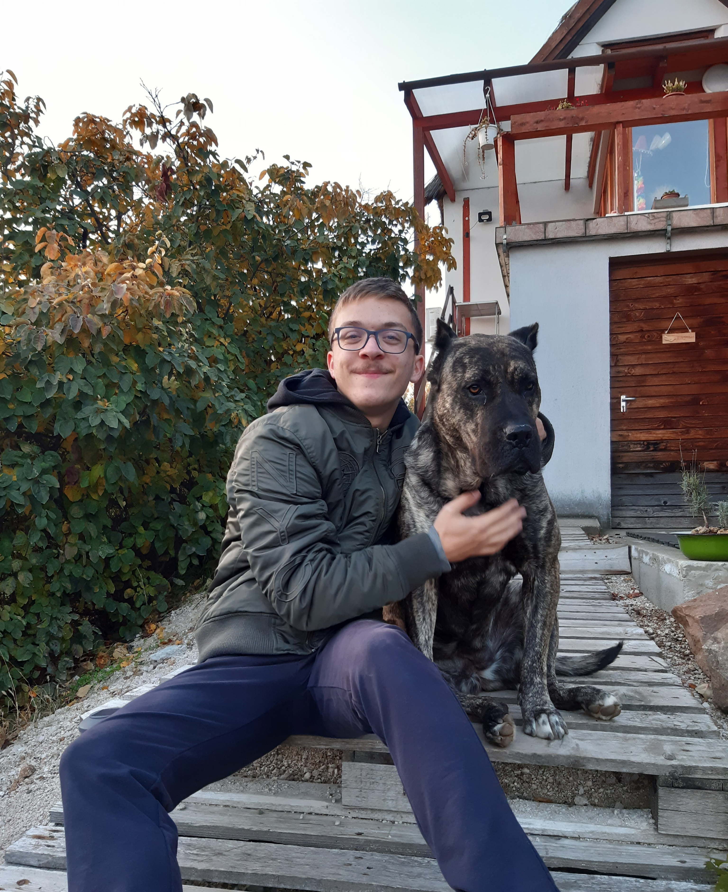

Bemutatkozás

Kovács Milán vagyok 18 éves. Jelenleg a SZÁMALK-Szalézi Technikum és Szakgimnáziumban tanulok Szoftverfejlesztő-és tesztelő szakon. Legjobban a programozás és a webfejlesztés érdekel. Emelett azonban több különböző tudományág iránt is érdeklődöm és a nyelvtanulás is vonz. Jelenlegi legfőbb célom a képzés sikeres elvégzése utána pedig külföldön kívánok elhelyezkedni és a tanulmányaimat egyetemen tovább folytatni.